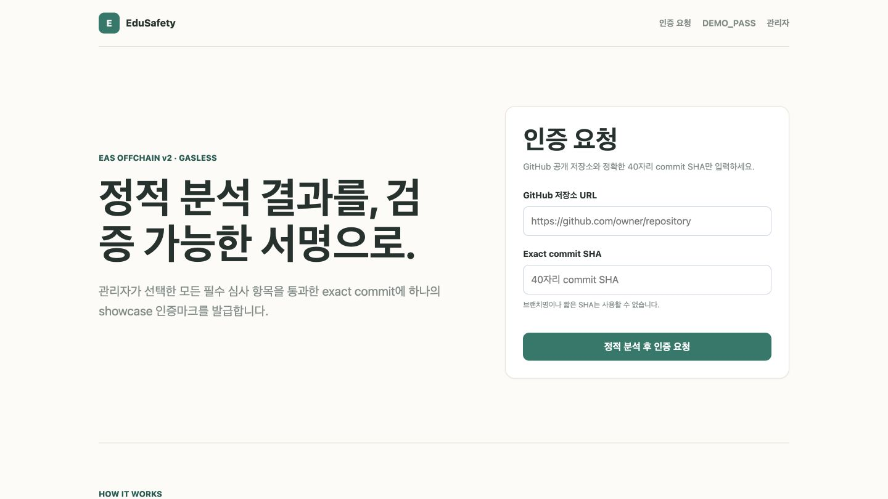
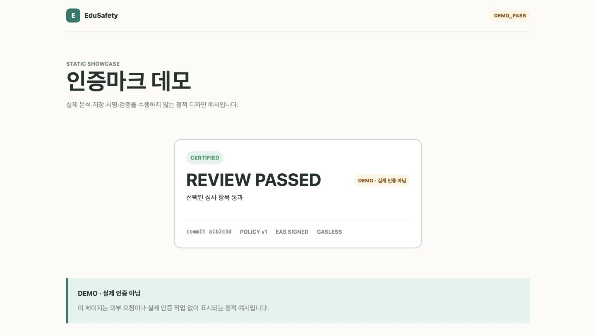

EXACT COMMIT · VERSIONED POLICY · GASLESS
정적 분석 결과를,
검증 가능한 서명으로.
특정 GitHub 커밋을 실행하지 않고 분석한 뒤,
고정된 정책의 판정을 다시 검증할 수 있는 증거로 남깁니다.
움직이는 브랜치 대신,
40자리 SHA
인증 대상을 다시 찾아갈 수 있는 하나의 코드 시점으로 고정합니다.
github.com/owner/repository
commit
0123456789abcdef0123456789abcdef01234567
브랜치명과 짧은 SHA는 받지 않습니다.

입력부터 공개 검증까지
하나의 snapshot이 이어집니다
요청 시작 시점의 ACTIVE 정책을 먼저 고정합니다.
- 01입력Repository + SHA
- 02정책 고정Policy snapshot
- 03정적 분석Fixed evaluators
- 04서명EAS Offchain v2
- 05공개 검증Proof + current HEAD
PASS일 때만 UID와 인증마크가 생성됩니다.
commands
대상 저장소의 코드는
한 줄도 실행하지 않습니다
GitHub REST API로 tree와 blob만 읽고, 서버에 고정된 evaluator만 적용합니다.
installbuildtestlifecycle
- 500
- 최대 파일
- 256 KiB
- 파일당
- 8 MiB
- 전체 합계
- FAIL CLOSED
- 누락·한계 도달
정책은 선택하고,
검사 방법은 고정합니다
관리자는 허용된 항목만 선택합니다. 검사 로직은 서버가 소유합니다.
DRAFT→ACTIVE→ARCHIVED
01하드코딩된 비밀정보 없음
02위험한 동적 코드 실행 없음
03의존성 잠금 파일 사용
04안전하지 않은 HTML 주입 없음
05제한된 CORS 정책
PASS가 아니면
서명도 없습니다
분석 뒤, 서명 직전에도 무결성 gate를 다시 통과해야 합니다.
FAILERRORNOT_RUNNOT_APPLICABLEUNKNOWN결과 누락→ NOT_ISSUED
검증 가능한 증거에
가스비는 들지 않습니다
결과와 정책을 canonical payload로 묶고 EIP-712로 서명합니다.
reportHash0x8d7a…ae31
policyHash0x2c51…9f08
criteriaHash0xb493…47cc
- 0
- RPC
- 0
- 트랜잭션
- 0
- 테스트 ETH
- 0
- 가스비
공개 검증은 proof를
처음부터 다시 계산합니다
- report · policy · criteria hash
- canonical statement · ABI data
- EIP-712 signature · attester
- EAS Offchain UID
- 만료 · 취소 · 현재 기본 브랜치 HEAD
01INVALID무결성 실패
02REVOKED운영 취소
03EXPIRED유효기간 종료
04UNVERIFIED현재 상태 확인 불가
05STALE현재 HEAD 변경
06VALIDproof와 HEAD 일치
운영 이력은
덮어쓰지 않습니다
애플리케이션뿐 아니라 PostgreSQL도 불변성과 중복 방지를 강제합니다.
- 1
- 동시에 ACTIVE인 정책
- 1
- 동일 subject + policy 발급
- 4
- 동시 분석 상한
- 6/min
- IP별 공개 발급 요청
215테스트 통과PostgreSQL 시나리오: 20개 요청 → 단일 행·UID
신뢰 흐름은 제품 화면으로 이어집니다
인증 요청과 공개 표시가 같은 정책·commit·서명 언어를 사용합니다.

관리자 화면에서는 정책 발행, 발급 이력, 취소를 운영합니다. DEMO_PASS는 정적 디자인 예시입니다.
정확한 범위가
신뢰를 만듭니다
보증하는 것
특정 exact commit 선택 정책의 정적 분석 PASS 서명과 snapshot의 무결성보증하지 않는 것
이후 commit 런타임 동작과 배포 환경 운영 보안 전체인증마크는 막연한 약속이 아니라,
다시 계산할 수 있는 서명된 snapshot입니다.